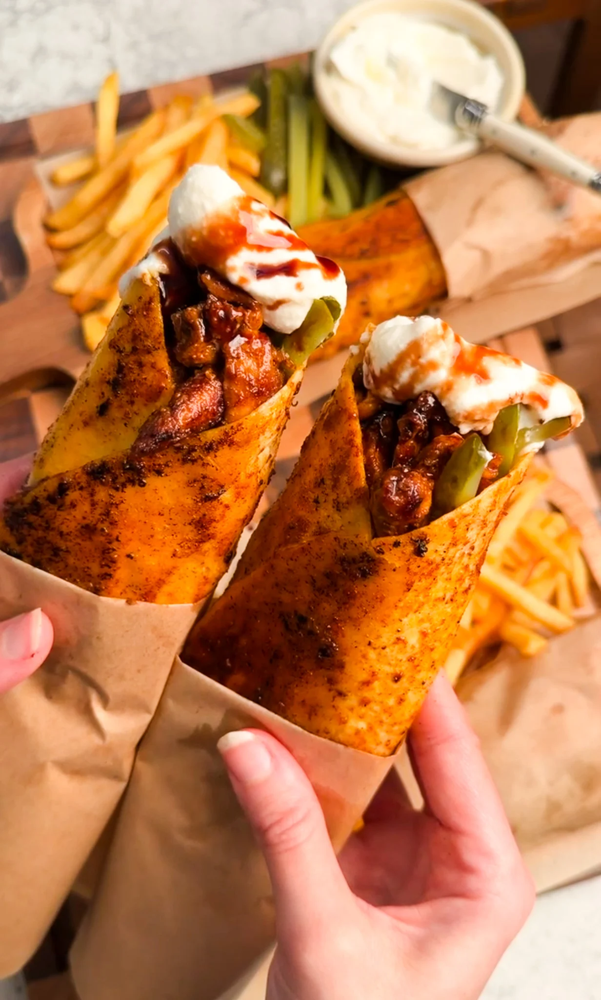

Shawarma Recipe
Home Page

Description
Shawarma is a delicious food in the Middle East, especially in Syria and
Iraq.
Ingredients
- Chicken or beef the main meat used for shawarma.
-
Shawarma spices a mixture of spices that gives the meat
its distinctive flavor.
-
Yogurt, lemon juice, and garlic used to marinate and
add flavor to the meat.
-
Olive oil, salt, and black pepper used to season the
meat.
-
Flatbread, vegetables, pickles, and garlic sauce used
to serve the shawarma.
Steps :
-
Marinate the meat - Mix the meat with yogurt, lemon juice, garlic,
spices, salt, and pepper.
-
Cook the meat - Cook the marinated meat until it is fully cooked and
lightly browned.
- Prepare the bread - Place the cooked meat inside the flatbread.
- Add the toppings - Add vegetables, pickles, and garlic sauce.
-
Roll and serve - Roll the shawarma tightly and serve it while warm.